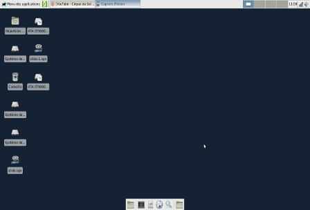

XFCE (XForms Common Environment) is a lightweight desktop environment for Unix/Linux systems.
XFCE embodies the traditional Unix philosophy of modularity and reusability. It consists of several components providing all the functionality one would expect from a modern desktop environment, while remaining relatively lightweight.
XFCE is fast, stable, and highly customizable.. It is perfectly suited to modest setups or those looking for a responsive environment without unnecessary frills.
Its Thunar file manager and control panel make XFCE a popular choice for many Linux distributions.
